List of Commonly Used Math AutoCorrect Entries in Word 365
How to Use This Listing
This reference organizes Math AutoCorrect entries by mathematical category to help you quickly find the codes you need. Each section contains commonly used symbols within that area of mathematics. The examples show basic usage patterns that you can adapt for your needs.
Notes:
- Important: The AutoCorrect codes are case-sensitive.
- When spaces are important in the UnicodeMath examples provided
below, a space is represented by the characters
<sp>. - In UnicodeMath, you can negate most mathematical relations by
prefixing them with a forward slash (
/). For example, typing/=produces ≠ (not equal), and/\subsetproduces ⊄ (not a subset). This convention provides a consistent, intuitive way to create negated relations that is easier to use than remembering separate AutoCorrect entries for each negated symbol. - You can find these Math AutoCorrect codes directly in Microsoft
Word:
- Open the Equation Toolbar
- Expand the Conversions menu
- View Equations Options
- Select the "Math AutoCorrect" tab.
- See Reference List Math Autocorrect Entries in MS Word 365 (Alphabetical) for a complete list of the Math AutoCorrect entries found in Microsoft Word 365 (sorted alphabetically by keyword).
- If no Math AutoCorrect entry exists for a common symbol listed
below, we have provided the hexadecimal value for the symbol. Windows
users can type the hexadecimal value and then press
<Alt+x>to produce the symbol. - For information on inserting a symbol that does not have a Math AutoCorrect entry, see Insert a symbol.
Basic Symbols and Operations
| Description | Keyword | Symbol | Example Usage | Example Output | Notes |
|---|---|---|---|---|---|
| Addition | + |  |
a+b |
Basic operator; no AutoCorrect needed | |
| Subtraction/minus | - |  |
a-b |
Basic operator; no AutoCorrect needed | |
| Multiplication (dot) | \cdot |  |
a\cdot<sp> |
||
| Multiplication (times) | \times |  |
a\times<sp> |
||
| Division sign | \div | 6\div<sp> |
|||
| Exponent/power | ^ | N/A | x^2<sp> |
Basic operator; no AutoCorrect needed | |
| Repeating decimal | \overbar |  |
4.\overbar(3)<sp> |
||
| Plus or minus | \pm |  |
a\pm<sp> |
Can also type +- |
|
| Minus or plus | \mp |  |
a\mp<sp> |
Can also type -+ |
|
| Square root | \sqrt |  |
\sqrt(3x+1)<sp> |
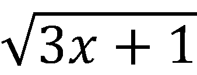 | |
| Cube root | \cbrt |  |
\cbrt<sp> |
||
| Fourth root | \qdrt |  |
\qdrt<sp> |
||
| Subscript | _ | N/A | x_1<sp> |
Basic operator; no AutoCorrect needed | |
| Cents sign | a2<Alt+x> | 50<sp> |
The space before the cents sign can be removed after creating it. | ||
| Infinity | \infty |  |
x\to\infty<sp> |
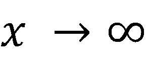 | |
| Pi | \pi |  |
\pi<sp> |
For circles and trigonometry | |
| Factorial | ! |  |
n! |
Basic operator; no AutoCorrect needed | |
| Composed with | \circ |  |
(f\circ<sp> |
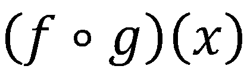 |
Fractions
| Description | Keyword | Symbol | Example Usage | Example Output | Notes |
|---|---|---|---|---|---|
| Stacked fraction | / | N/A | 6/3<sp> |
Basic operator; no AutoCorrect needed | |
| Skewed (bi-level) fraction | \sdivide | N/A | 6\sdivide<sp> |
||
| Linear fraction | \ldivide | N/A | 6\ldivide<sp> |
Common Mathematical Relationships
| Description | Keyword | Symbol | Example Usage | Example Output | Notes |
|---|---|---|---|---|---|
| Equal | = |  |
a=b |
Basic operator; no AutoCorrect needed | |
| Not equal | \ne |  |
a\ne<sp> |
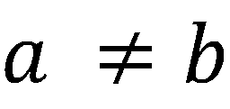 | Also available: \neq or /= |
| Less than | < | a<b |
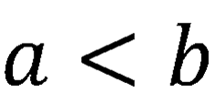 | Basic operator; no AutoCorrect needed | |
| Not less than | /< |  |
a/<b |
||
| Greater than | > |  |
a>b |
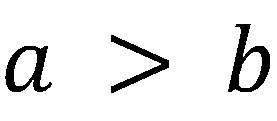 | Basic operator; no AutoCorrect needed |
| Not greater than | /> | a/>b |
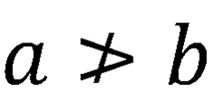 | ||
| Less than or equal | \le | 
|
a\le<sp> |
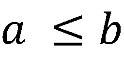 | Also available: \leq or <= |
| Neither less than nor equal | /\le | a/\le<sp> |
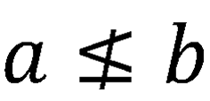 | ||
| Greater Than or Equal | \ge | a\ge<sp> |
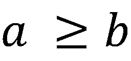 | Also available: \geq or >= |
|
| Neither greater than nor equal | /\ge |  |
a/\ge<sp> |
||
| Approximately equal | \approx |  |
a\approx<sp> |
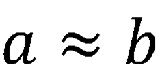 | |
| Proportional to | \propto |  |
a\propto<sp> |
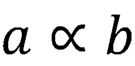 | |
| Congruent to | \cong |  |
\overbar(AB)<sp> |
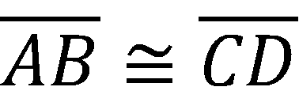 | |
| Not congruent to | /\cong |  |
\overbar(AB)<sp> |
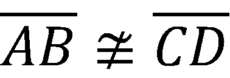 | |
| Similar to | \sim | ABCD\sim<sp> |
|||
| Not similar to | /\sim |  |
ABCD/\sim<sp> |
Sets and Logic
| Description | Keyword | Symbol | Example Usage | Example Output | Notes |
|---|---|---|---|---|---|
| Element of | \in |  |
x\in<sp> |
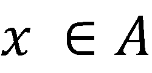 | |
| Not element of | \notin |  |
x\notin<sp> |
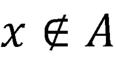 | Also available: /\in |
| Contains as member | \ni | A\ni<sp> |
|||
| Subset of | \subset |  |
A\subset<sp> |
||
| Not a subset of | /\subset | A/\subset<sp> |
|||
| Subset or equal to | \subseteq | 
|
A\subseteq<sp> |
||
| Neither a subset of nor equal to | /\subseteq |  |
A/\subseteq<sp> |
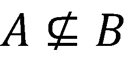 | |
| Superset of | \superset |  |
A\superset<sp> |
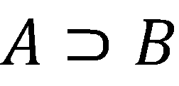 | |
| Not a superset of | /\superset |  |
A/\superset<sp> |
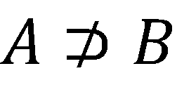 | |
| Superset or equal to | \superseteq | A\superseteq<sp> |
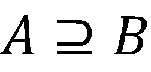 | ||
| Neither superset of nor equal to | /\superseteq |  |
A/\superseteq<sp> |
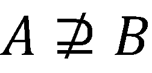 | |
| Union | \cup |  |
A\cup<sp> |
||
| Intersection | \cap |  |
A\cap<sp> |
||
| Biconditional | \leftrightarrow | P\leftrightarrow<sp> |
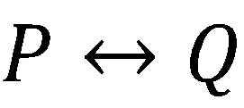 | ||
| Implication | \rightarrow |  |
P\rightarrow<sp> |
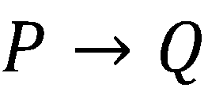 | |
| And | \wedge | P\wedge<sp> |
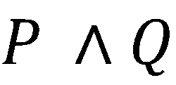 | ||
| Or | \vee |  |
P\vee<sp> |
||
| Not | \neg |  |
\neg<sp> |
||
| Not AND (NAND) | 22bc<Alt+x> |  |
P 22bc<Alt+x> Q |
||
| Not OR (NOR) | 22bd<Alt+x> | P 22bd<Alt+x> Q |
|||
| Exclusive OR (XOR) | \oplus | P\oplus<sp> |
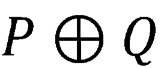 | ||
| Exclusive NOR (XNOR) | \odot |  |
P\odot<sp> |
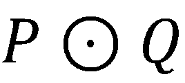 | |
| For all | \forall | \forall<sp> |
|||
| There exists | \exists | \exists<sp> |
Special Sets
| Description | Keyword | Symbol | Example Usage | Example Output | Notes |
|---|---|---|---|---|---|
| Empty set | \emptyset |  |
A=\emptyset<sp> |
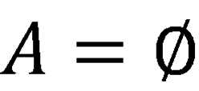 | |
| Complex numbers | \doubleC |  |
z\in\doubleC<sp> |
||
| Integers | \doubleZ |  |
n\in\doubleZ<sp> |
||
| Natural numbers | \doubleN | x\in\doubleN<sp> |
|||
| Rational numbers | \doubleQ | q\in\doubleQ<sp> |
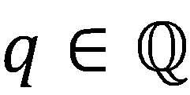 | ||
| Real numbers | \doubleR | y\in\doubleR<sp> |
Greek Letters (Common)
| Description | Keyword | Symbol | Example Usage | Example Output | Notes |
|---|---|---|---|---|---|
| Alpha | \alpha |  |
\alpha<sp> |
||
| Beta | \beta | \beta<sp> |
|||
| Chi | \chi | \chi<sp> |
|||
| Delta | \delta |  |
\delta<sp> |
||
| Capital Delta | \Delta |  |
\Delta<sp> |
||
| Gamma | \gamma |  |
\gamma<sp> |
||
| Lambda | \lambda | \lambda<sp> |
|||
| Mu | \mu | \mu<sp> |
|||
| Omega | \omega |  |
\omega<sp> |
||
| Pi | \pi | |
\pi<sp> |
||
| Phi | \phi | \phi<sp> |
|||
| Rho | \rho | \rho<sp> |
|||
| Capital Sigma | \Sigma |  |
\Sigma<sp> |
||
| Tau | \tau |  |
\tau<sp> |
||
| Theta | \theta |  |
\theta<sp> |
Calculus and Analysis
| Description | Keyword | Symbol | Example Usage | Example Output | Notes |
|---|---|---|---|---|---|
| Limit | lim | N/A | lim_(x\to\infty)<sp>1/x<sp><right arrow key>=0 |
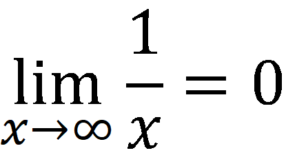 | Text function; no AutoCorrect needed |
| To; right arrow | \to | |
x\to<sp> |
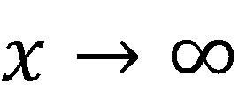 | Also available: \rightarrow |
| Infinity | \infty | |
x\to<sp> |
||
| Prime | \prime | f\prime(x) |
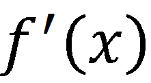 | ||
| Double prime | \pprime | f\pprime(x) |
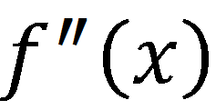 | ||
| Triple prime | \ppprime |  |
f\ppprime(x) |
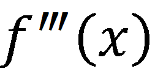 | |
| Quadruple prime | \pppprime |  |
f\pppprime(x) |
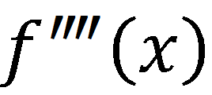 | |
| Integral | \int |  |
\int_0^1<sp> |
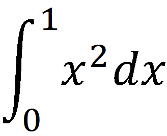 | |
| Double integral | \iint | \iint<sp> |
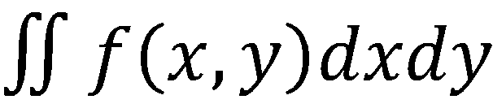 | ||
| Triple integral | \iiint | \iiint<sp> |
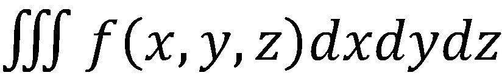 | ||
| Partial derivative | \partial | \partial<sp> |
|||
| Sum | \sum | \sum<sp> |
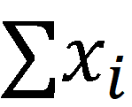 | ||
| Product | \prod | \prod<sp> |
|||
| Delta/Change | \Delta | |
\Delta<sp> |
||
| Gradient/Nabla | \nabla |  |
\nabla<sp> |
Geometry and Vectors
| Description | Keyword | Symbol | Example Usage | Example Output | Notes |
|---|---|---|---|---|---|
| Line segment (overbar) | \overbar | N/A | \overbar(AB)<sp> |
||
| Line (left right arrow above) | \tvec | N/A | (AB)\tvec<sp> |
||
| Vector | \vec |  |
(v)\vec<sp><sp> |
Adds arrow accent to character | |
| Angle sign | \angle |  |
\angle<sp> |
||
| Right angle sign | 221f<Alt+x> |  |
221f<Alt+x>A |
Currently no AutoCorrect entry available | |
| Perpendicular to | \perp |  |
A\perp<sp> |
||
| Parallel to | \parallel |  |
a\parallel<sp> |
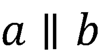 | |
| Not parallel to | 2226<Alt+x> |  |
\overbar(AB)<sp>2226<Alt+x>\overbar(CD)<sp> |
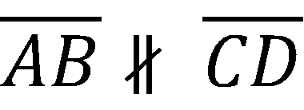 | |
| Congruent to | \cong | |
\overbar(AB)<sp> |
||
| Not congruent to | /\cong | |
\overbar(AB)<sp> |
||
| Similar to | \sim | ABCD\sim<sp> |
|||
| Not similar to | /\sim | |
ABCD/\sim<sp> |
||
| Pi | \pi | |
\pi<sp> |
For circles and trigonometry | |
| Degree | \degree |  |
90\degree<sp> |
||
| Triangle | 25b3<Alt+x> |  |
25b3<Alt+x>ABC |
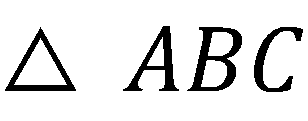 | Currently no AutoCorrect entry available |
| Parallelogram | \underline |  |
\underline<sp> |
||
| Circle | 25ef<Alt+x> | 25ef<Alt+x>A |
Currently no AutoCorrect entry available | ||
| Circle with dot inside | \odot | |
\odot<sp> |
||
| Arc | \overparen |  |
\overparen(AB)<sp> |
Chemistry and Physics
| Description | Keyword | Symbol | Example Usage | Example Output | Notes |
|---|---|---|---|---|---|
| Right arrow | \rightarrow | |
A\rightarrow<sp> |
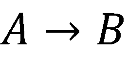 | Also available: \to or -> |
| Left-right arrow | \leftrightarrow | A\leftrightarrow<sp> |
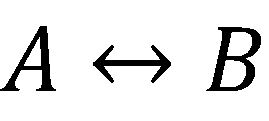 | ||
| Approximately | \approx | |
pH\approx<sp> |
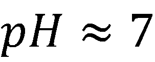 | |
| Plus or minus | \pm | |
5\pm<sp> |
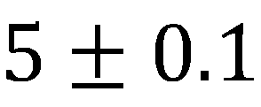 | Can also type +- |
| Degrees Celsius | \degc |  |
25\degc<sp> |
||
| Degrees Fahrenheit | \degf |  |
25\degf<sp> |
||
| Much less than | \ll |  |
m_e\ll<sp> |
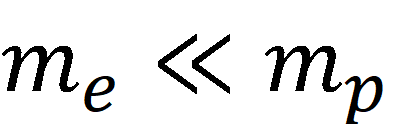 | Can also type << |
| Much greater than | \gg | F_g\gg<sp> |
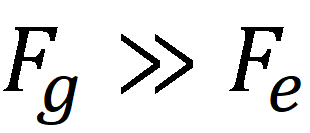 | Can also type >> |
Matrix and Array Operations
| Description | Keyword | Symbol | Example Usage | Example Output | Notes |
|---|---|---|---|---|---|
| Bare matrix | \matrix | \matrix(a&b@c&d)<sp> |
|||
| Matrix with square brackets | [\matrix(...)] | N/A | [\matrix(a&b@c&d)]<sp> |
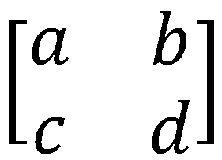 | |
| Matrix with curly braces | {\matrix(...)} | N/A | {\matrix(a&b@c&d)}<sp> |
||
| Matrix with parentheses | \pmatrix |  |
\pmatrix(a&b@c&d)<sp> |
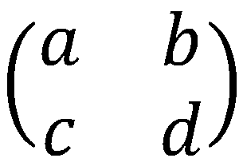 | |
| Matrix with single vertical bars | |\matrix(...)| | N/A | |\matrix(a&b@c&d)|<sp> |
||
| Matrix with double vertical bars | \Vmatrix | \Vmatrix(a&b@c&d)<sp> |
|||
| Vertical bar/determinant | \vert |  |
\vert<sp>A\vert<sp> |
Also available: | (pipe character) |
|
| Matrix column separator | & | \matrix(a&b@c&d)<sp> |
Basic operator; no AutoCorrect needed | ||
| Matrix row separator | @ | \matrix(a&b@c&d)<sp> |
Basic operator; no AutoCorrect needed |
Miscellaneous Common Symbols
| Description | Keyword | Symbol | Example Usage | Example Output | Notes |
|---|---|---|---|---|---|
| Therefore | \therefore | A=B, \therefore<sp> |
|||
| Because | \because | \because<sp> |
|||
| Horizontal ellipsis centered vertically | \cdots |  |
1+2+\cdots<sp> |
||
| Vertical ellipsis centered horizontally | \vdots | \vdots<sp> |
|||
| Downward-slanting diagonal ellipsis | \ddots | \ddots<sp> |
|||
| General ellipsis (used in lists) | \dots |  |
1, 2, 3,\dots<sp> |
Also available: \ldots |